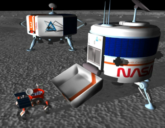
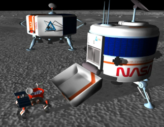

jedediyah.github.io/belmont
About Jed
Teaching
→ Astronomy
→ Robots
→ Teaching

 

Hexapawn is a mini-chess game.
It uses six pawns on a 3x3 board.
White moves first.
It uses six pawns on a 3x3 board.
White moves first.
Starting
position
position

Move
forward
forward
Capture
diagonally
diagonally
A player wins when:
- They reach the other side
- They capture all their opponent's pieces
- It is their opponent's turn and there is no legal move
Let's play Hexapawn!
Make your own board:
or play online:
Some interesting things to think about
- Is it possible to draw (tie) in hexapawn?
- Does one side have the advantage?
- What is the shortest game possible (fewest moves)?
- What is the longest game possible (most moves)?
- How many unique positions are possible after one move (only white moves)?
- How many unique positions are possible after the first two moves (white moves then black moves)?
- Give an example of a position that is impossible to reach.
- If white's first move is to move their left-most pawn forward, then what is blacks' worst response? What is black's best response?
- If white's first move is to move their center pawn forward, then what is black's worst response? What is black's best respones?
- How many unique games are possible? A "game" is represented by a sequence of moves.
Next Level Hexapawn
Browse to jedediyah.github.io/hexapawn. Try playing a few games. Let the machine play itself until it solves the game.- As the machine plays itself, how can you tell when the game as been solved?
- What is the shortest game in the tree? What is the longest?
- After letting the machine play itself until one side always wins, there are still several games in the gree where each side has won. So how is it that one side will always win now? In other words, why are some previously reachable results now un-reachable?
- Why doesn't the tree expand completely? That is, why won't every possible game get played?
- Find a game that hasn't yet been recorded in the tree, and play it into the tree.
- Refresh the website and start the machine playing itself again. Does it generate the same tree each time? What might it say about the algorithm if the tree is the same or different ecah time?
- Refresh the website. Running one Machine vs. Machine game at a time,
- How many games did it take before black always wins?
- How many wins total did white have?
- On average how many games does does it take before black always wins?
- On average how many wins will white achieve? What is the fewest number possible? What is the most?
- A paper about machine learning for games using Hexapawn, by Martin Garder: http://cs.williams.edu/~freund/cs136-073/GardnerHexapawn.pdf"
- Questions or answers?! jedediyah@gmail.com